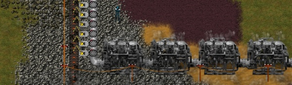
Gestion de l'énergie
Approvisionne et équilibre ta production énergétique pour alimenter l'usine sans interruption.
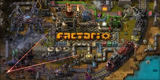
Planification, logistique et défense sur une planète extraterrestre. Solo ou multijoueur.
Explore une planète inconnue, extrais des ressources, et construis des usines automatisées pour produire des objets complexes.

Approvisionne et équilibre ta production énergétique pour alimenter l'usine sans interruption.
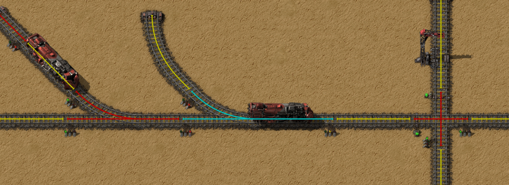
Utilise un vaste réseau de trains avec signaux pour acheminer les ressources efficacement.
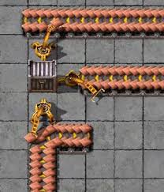
Programme des bras robotiques et convoyeurs pour optimiser ta chaîne de production.
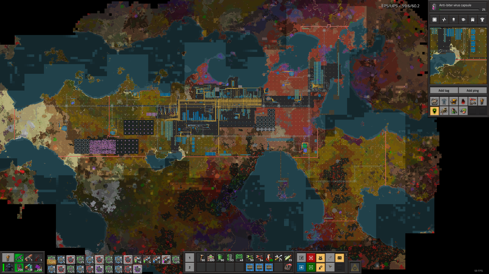
Joue en équipe pour bâtir ensemble des mégabases industrielles et relever des défis.
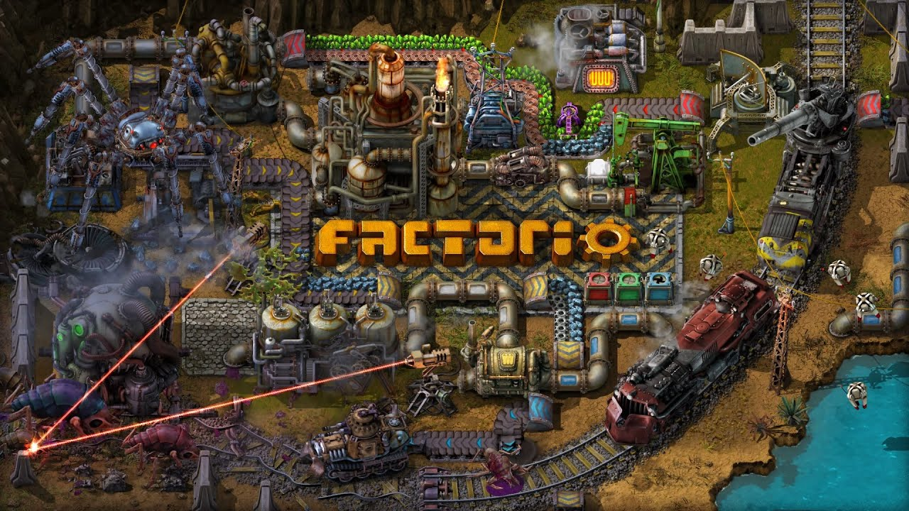
Découvre les mécanismes, la construction et les combats. Vidéo non officielle en placeholder ici.
Lire la vidéo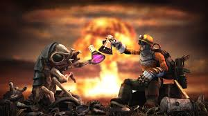
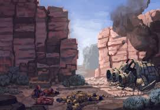
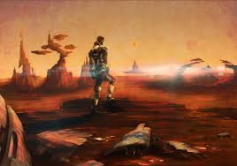
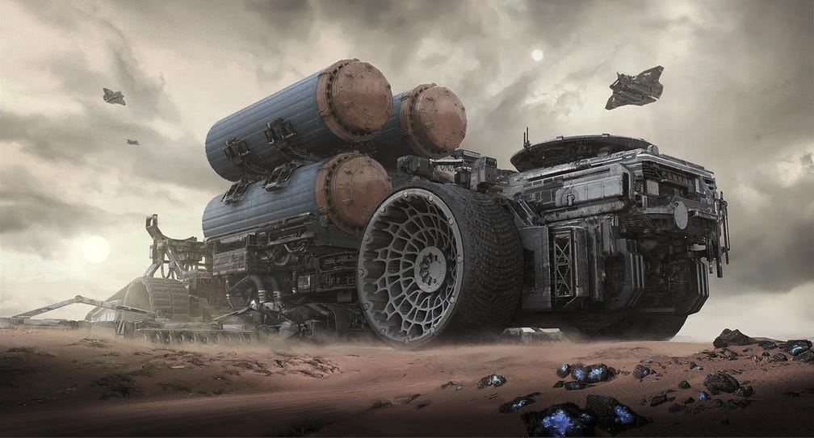
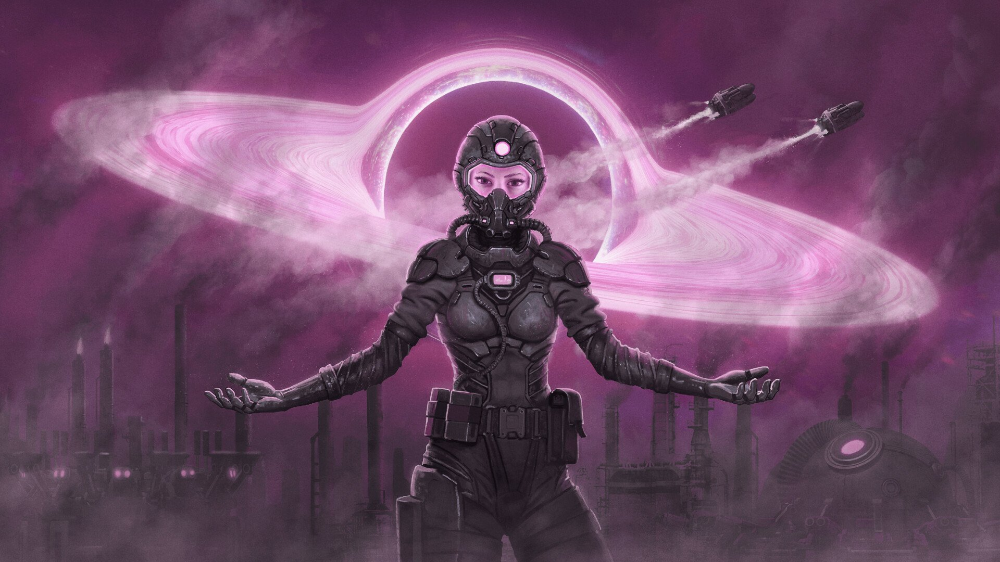
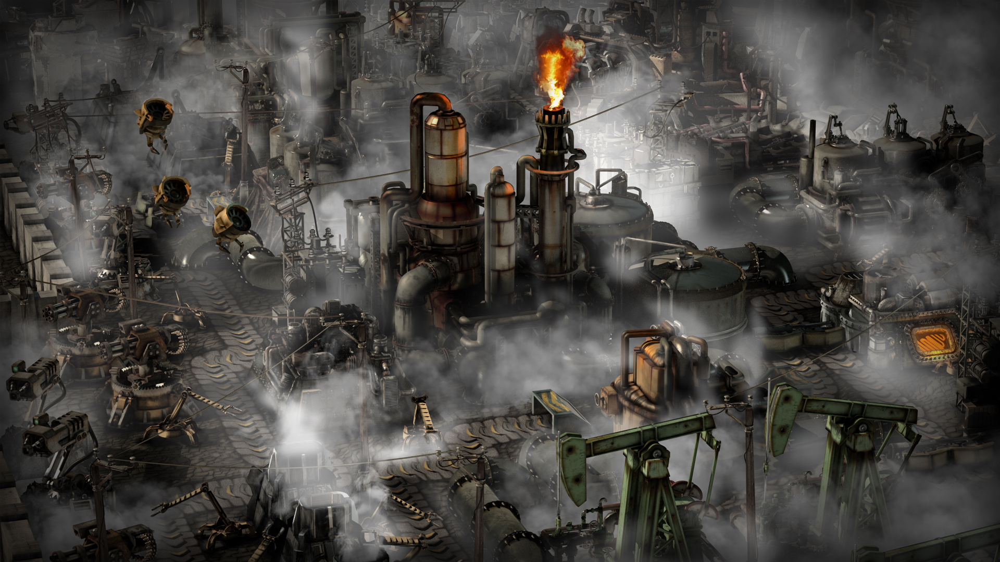
Ajout de nouvelles options de tri automatique et amélioration des interfaces.
Améliorations significatives pour soutenir les mégabases et le multijoueur.
Nouveaux modules pour trains et gestion des signaux plus précise.
Oui, joue en solo ou en coopération jusqu'à plusieurs dizaines de joueurs.
Oui, trains, signaux et gestion complète du transport ferroviaire sont disponibles.
Absolument, la communauté propose de nombreux mods permettant d'étendre le gameplay.